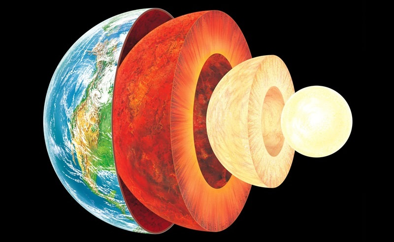
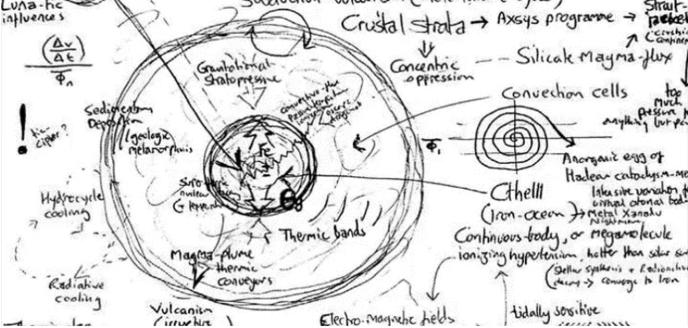

Robin Mackay :: 地质创伤简史
原文来自：A Brief History of Geotrauma 译者：忆子 译文首发在豆瓣，本文为转载。
为2001年的 Leper Creativity: Cyclonopedia Symposium 撰写。

另请参见随附的视频内加尔斯塔尼的发明。
弗洛伊德、费伦齐、洛夫克拉夫特、博德金、查伦诸、凯恩、巴克、兰德、巴桑尼。不可能的人物。他们每个人都是疯子、骗子、赝品，充其量是伪科学家。未经训练的思想家孵化着思辨的杂交产物。歇斯底里症，神经元学（neuronics），层分析（stratoanalysis），精神分裂分析，地质创伤学（geotraumatics）。 通过曲解、虚构的融合、强行联结以及其他缺乏学者原则性的阴暗手段，他们宣称发明了一门新的学科，这个学科在不同的时期有不同的名称；却没有人清楚地了解这门新学科的目标、方法或原则是什么。
然而，在这之中存在着重要的事物；一些濒临被遗忘的事物。如果不是因为深成学委员会（Plutonics Committee）的工作，它们将无法留下任何痕迹：《创伤的地质-宇宙理论》（Geo-cosmic Theory of Trauma）甚至无法化为一种记忆。
这并不容易。必须采取间接的办法。需要一个当代的倡导者，一个新的候选人。如果他不存在，那就必须发明他。这样，答案就明了了。
委员会需要尽可能广泛地调研目标市场。因此，首要任务是了解思想的传播机制：一种概念的传染病学。很明显，这项工作无法由一个学者胜任。情况已经不同了：像兰德和巴桑尼这样的怪胎如今连大学的大门都进不去。继任者必须是一个外行，甚至是外来者。一个怪异的特立独行者，自学成才，没有学历；一个不知从哪里冒出来的孤独呼声。
他或她必须保证不可被接触、隐姓埋名。也许他住在邪恶轴心的某个地方，以增添几分政治阴谋的色彩：一个受迫害的政治异见者在网络边缘寻找其他心智不健全的人，然后他遇到了从已哲学系退休的兰德，后者现在正在兜售阴谋论和新神秘主义思辨。兰德把最后一份巴克手稿传给了他。随后他在伊朗发现了巴桑尼的笔记本，意识到了博德金-凯恩的联系，并开始将其拼凑起来。事情可能就是这样发生的。

就把他调到远东去，调去一个从来没有人去过的地方，甚至不能定位在中国或日本、马来西亚。然后用一种饱受折磨的、格言式的风格来构筑他的作品，这种风格结合了极端的语源学敏锐性和过量观看恐怖片催生的病态想象力。
总之，他可能在某些方面有病。失眠，谵妄，无法正常工作；或是罹患某种中东热病。也许是这样。
他深藏不露，其人格也必然会散发出某种神秘的魅力和异国情调的光环。既然他是外来者，那么几乎任何与之相关的事情都平添了可信性。尽可能让他隐藏起来，暗中起效。一切亲自露面都随即被取消：签证出了问题、健康状况不佳，采取一切必要措施蒙混过关。如果真的到了必须露面的阶段，一定要不惜一切代价做到最好。
但最重要的是，观念在不断涌现，发挥着潜移默化的影响。只需他存在的时间足够长，就能拉开序幕。一旦这些观念被采纳、被嵌入，他就可以轻易地退场。对这样的怪胎而言发生什么都不足为奇。
的确，委员会是冒了风险的。他们被自己的造物冲昏头脑，在一些不必要的巴洛克折曲中穿行。一个虚构的量阐发了其自身的超信非存在（hyperstitional inexistence）的理论？一个告诉我们什么是提着我们的线的木偶？
最后，没有人会疯狂到相信这不是真的。
*
沿那条河上行，就像回到创世之初，地球上草木丛生，巨大的树木如君主一般，一条空无人烟的河流，一片茫无边际的寂静，一座无法进入的森林，空气温暖、浓重而呆滞。…荒无人烟的漫长水路绵延向前，一直延伸到远方浓荫的幽幽暗暗之中…我们是一群在史前大地上的漫游者，这片土地有着一种未知星球的外观。
— 高大的树木。
— 你是什么时候出生的？
所以现在你也是做梦者之一了。你已经梦见过终末的泻湖的复杂蜃景（Fata Morgana）。你看起来很累。那里水深吗？
访问文件。
在这种歇斯底里症的个案下，心理材料将自己呈现为一个至少以三种不同方式分层的多维结构。（我希望我现在能够证明这种图示表达方式是准确无误的）
首先，存在着一个由对事件或思路的记忆所组成的核心（nucleus），其中创伤因素达到了顶点，或者作为病源性（pathogenic）观念得以以最纯粹的形式表现。 在这个核心周围，我们发现往往有大量的其他记忆材料，这些材料必须在分析中加以处理，而且正如我们所说的那样，它们按三种顺序排列。
首先，在每个单独的主题中都有明确的线性时间顺序。 […]
在布洛伊尔对安娜•O的分析中，[…]在[…]七个标题下分别按时间顺序收集了十到一百多份个人记忆，我们仿佛在检查一个整理得井井有条的卷宗。
它们使分析工作更加困难，因为它们的特点是，在重现记忆时，它们颠倒了这些记忆的产生顺序。档案中最鲜活的和最新的经验（作为外壳）首先出现，最后是在序列中实际上的初始经验。
这些分组构成“主题”。这些主题展现出第二种排列，它们每个都集中地围绕着病源性核心分层。（我无法用其他方式表达）
每一个特定层的内容均以同等程度的阻抗（resistance）为特征，而且这种程度随着层与核的接近度而成比例地增加。因此，在这些区域内，意识的改变程度都相等，不同的主题在这些区域内延伸。最外围的层也包含记忆（或档案），它们属于不同的主题，这些记忆很容易被记住，而且始终能被清晰地意识到。我们越深入，新出现的记忆就越难被识别，直到接近核心时，我们会遇到即使在重现它们时患者也会否认的记忆。
还有第三种排列值得一提，这种排列最重要，也最难对它作出概括性描述。我所想到的是一种依据思想内容的排列，即由一条逻辑线串起的链接，该链接一直延伸到核心，并倾向于走一条不规则的、曲折的路径，它在每个个案中都不同。这种安排具有动态的特点，与前面提到的两种形态学分层的排列不同。虽然前两个层在空间图示中可以用一条连续的（弯曲的或笔直的）线来表示，但逻辑链的路径必须用一条断线来表示，这条断线将沿着最迂曲的路径，它从表层穿入最深层再折返，但一般来说，它倾向于将从外层向核心推进，触碰到中间每一个停顿处。这条线类似于解决骑士巡逻问题（Knight’s Move problem）时所用的之字形线，它穿过棋盘中的方格。[…]
我们已经说过，这种材料的行为就像异物一样，对它的处理方法也如同从生物组织中清除异物。我们现在可以看到这种类比的失败之处。异物与它周围的各层组织不发生任何关系，虽然它改变了它们，并使它们感染上反应性炎症。另一方面，我们的心理病源集合不会从自我中被彻底清除。
它的外在层在各个方向上都渗入正常自我的各部分；实际上，它们与病源组织一样属于后者。在分析中，二者之间的界限纯粹是约定俗成地固定下来的：此处在界内，此处在界外，而在某些地方则根本无法界定。病源性组织的内层越来越与自我疏远，却依旧没有任何病源性材料开始之处可见的边界。事实上，病源性组织的行为并不像一个异物，而更像一个渗透者。1
创伤理论从一开始就是一个加密-地质学（crypto-geological）混合体。达尔文和地质学家们已经确定，地球的整个表面和在其上匍匐前行的一切都构成一种活化石记录，一个储存在难以想象的移涌之上的记忆库。这些记忆被封存起来，并对其自身的材料进行搅动和再加工，乃至其内部都无法进行自我检视。任何对加密的破译都将成为一次令人恐惧的读取，其故事将与弗洛伊德的故事平行展开，就如两个相互交织的耻辱主题。
弗洛伊德处理地层意象时始终保持一种谨慎态度，将其视作是“隐喻”，而丹尼尔·巴克（Daniel Barker）博士却放弃了这种谨慎，他的宇宙地质创伤理论（或称深成学）将心理创伤的理论推向地球物理学，心理经验则变成了加密的地质学报告，是地球物质无意识中原始的冥古宙创伤的回响。巴克进一步发展了查伦诸教授的“广义层化（generalised stratification）”模型，将尼采式谱系学超激进化为一种唯物主义的加密科学（materialist cryptoscience）。
地球把它自己看作什么？这是一个融贯性的问题。先从科学故事讲起，故事是这样的：在四点五亿年前到四十亿年前（冥古宙期间），地表上微行星和陨石的撞击导致升温（动能转为热能），地球因而一直处于过热的熔渣状态。
随着太阳系的凝结，这些碰撞的频率和规模稳步下降，由于热量向外层空间辐射，地表随之冷却，这种冷却被新生的水循环所巩固。在随后的太古宙世代中，熔融核被深埋在地壳内，产生了一个绝缘的原始外生创伤贮藏所，它是地质变化的地心宇宙（geocosmic）动力源。就是这样。这就是深成学，或新深成主义（neoplutonism）。一切都在这里：无机记忆，外部碰撞到内部内容的深成循环，作为驱力机制的非个人创伤。它们下降到地球的身体里，对应于地心宇宙时间的倒退。创伤就是身体。最终，在其最大限度失衡的极点上，它变成了金属。在MVU（米斯卡塔尼克虚拟大学）中，他们称它为克苏鲁地狱（Cthelll）：地球质量的三分之一，半流体金属海洋，巨分子（megamolecule），超乎想象的压力锅。它的温度比太阳表面还要高，在地壳下达到三千多度，所有的热能都是纯粹的外部非个人、非主观记忆，地球的板块构造机器通过硅酸盐岩浆通量的传导和对流动力学运作着，随着它以潮汐脉冲的形式冲向月球轨道，整个地月系都沐浴在电磁场中。
克苏鲁地狱是地球内部的梦魇，夜行的海洋，仙纳度（Xanadu）：地球无机金属身体的创伤-哀嚎，由强度交叉线涂上阴影，被热波和电流、癫狂的粒子、离子的剥离与供应过剩横穿；引力的深层敏感性转变成非局部的电网格（nonlocal electromesh），喂养着火山作用（vulcanism）…这就是深成科学不断滑向精神分裂谵妄的原因。2
让我们重述这个故事。
在太阳系诞生之初，一个微小均匀的球状物质偏离了将成为主要天体的原行星盘，于太阳星云中出现。在5亿年内，物质突然沉入一个高密度金属核心中：“金属灾变（Iron Catastrophe）”，形成了一个分异、分层的行星结构，其熔融的内部物质被薄薄的岩石地幔和冷硬的地壳所包围。这种脆弱的表面将地球“与太阳共燃的内在性”这个被压抑的秘密封存于深处。
但地球的面貌并不是一成不变的。地球面貌的变化是外部过程（气候剥蚀和沉积）和内部过程（火成的或岩浆的流体运动）共同作用的结果。这两组过程改变了地球表面，并决定了地球上一切事物的命运。它们的能量来源分别是太阳，以及它被压抑的小同胞：地球的核心。因此，薄薄的地壳注定要保护地球上的居民们免受原始的创伤，在它的颜貌上露出不断变化的太阳-深成（helio-plutonic）结合的表情。
深层岩浆的压力周期性地促使它向阻力最小的方向移动：被压抑的能量喷发到地表，通过地壳岩石形成火成侵入（igneous intrusions）。围绕着这些周期性爆发的深成宣泄所结晶出的地球症状影响深远、纵横交错。
外来居民（Resident Alien）；内居者。创伤既是一个扭曲的情节，又是一个地质复合体（geological complex），还是一个高度加密的文件系统。文件浮出水面，却又被搅碎，被折回自己压抑的碎片中。病源核心的卷须与“正常组织”无形中纠缠在一起。而每一个曾经存在过的生命个体都是一个重播副本，从录音库中被提取出来，被困在一个歌颂着克苏鲁地狱荣耀的迭奏中。
巴克的理论超越了《超越快乐原则》中所概述的生物中心模型的局限性，将创伤这一概念扩展到涵盖了无机领域。地球的吸积是原初的创伤，它的伤痕被加密在地球物质中，或成为了地球物质，建立起了一个与层化物质领域共存的无意识痛苦登记册。
尚不知道巴克是否曾与博德金博士直接接触过，尽管后者在“疤痕计划”之前的秘密研究任务中就开始进行他的工作了。无论如何，在他们的理论作品中，有一个共同的特点，那就是通激进化弗洛伊德式的创伤理论，对“个体发生重演种系发生（Ontogeny recapitulates phylogeny）”这一声名狼藉的生物学概念进行了改造。如果说生物学只是克苏鲁地狱沸腾内核的一种痛苦的咒文，那么谱系学、层分析和信息论则承诺为这种宇宙性痛苦提供一种密码学；而海克尔的复演说（Haeckel’s recapitulation thesis）则为如何格式化一个歇斯底里生物学（hysterico-biological）文件系统提供了建议。
密码学一直是我的指导思想，贯穿始终。即使是现在问我地质创伤学是什么，答案仍是：一种严谨的解码实践。3
这样的密码学如何运作？这不是开个文件、拆个箱子那么简单的事。弗洛伊德知道通过如此直接的途径是无法抵达核心的。它是一种逆向文件系统（reverse-file-system），不断地被自己的访问日志加密，不能直接解压，只能通过实验性与其中涌现的扭曲的、根茎状的情节接触…
不仅仅[…]是一条之字形的、扭曲的线，而是一整个线的分枝系统，特别是那种汇聚的线。它包含两个或更多的线程相遇的节点，此后作为一条线单独行进；通常情况下，几条独立行进的线，或在不同的点上通过边路侧径起来的线，都会汇入核心。4
毋庸置疑，创伤属于个人记忆之外的时代——显然，地质创伤学激进化了查伦诸教授的主张，即精神分裂分析应进一步延伸到家庭戏剧的辖域之外，投注到社会和政治领域中；它超越了历史和生物学，将地质学和宇宙学纳入了先验无意识的范围。有机体常根据其狭隘的参照系（妈妈－爸爸）来体认其不安的根源，或者用个体死亡的威胁解释之，然而这种不安却植根于物理现实自身更深远的创伤。创伤不是个人的，地球上的时间被记录下来、淤积起来，郁结于我们的内心。人类的所有经验都是克苏鲁地狱向宇宙发出的加密信息，是地球的尖啸。
将地震学快进，你会听到地球的尖啸。地质创伤是一个持续的过程，其张力在生物组织中不断（有时以冻结的形式）表现出来。5
尼采认为，人体的结构和用途是与人类共存的神经症苦难系统（system of neurotic afflictions）的根源；但这也是一种行星的神经官能症。地质创伤学必须以超谱系学的方式运作，进入这些深冻并刻印在身体里的记忆，并判断它们所索引的行星事件。
《迷魂记》对歇斯底里症的戏剧化处理似乎将弗洛伊德的拓扑扭曲模型线性化了，片中暗示通过线性的退行，通过访问个人记忆，层层剥离，就可以抵达核心，摆脱重复。也许只是迫于视觉娱乐的需要，精神分析才离开了诊疗椅，离开了治疗师的办公室；但它也直觉地捕捉到了歇斯底里系统与非人类记忆系统间的亲缘关系（很可能希区柯克像阅读弗洛伊德一样阅读博德金）；它看出创伤性退行不是通过内省，而是通过回到以前的环境激活的，无意识以情感诱因的形式随附于地理学。高大的树木。
因此，我们又回到了海克尔的复演说。博德金在对“神经元学”的表述中，试图将无意识理解为一种依时间编码的脊髓记忆，是一系列对气候条件敏感的进化化学反应诱因。神经元学着手绘制一张经验性的地图，以描绘心理组织、生物种系发生和环境刺激之间的关系。博德金的理论具有一种令人不安的预见性，它探讨了失控的气候转变致使热带升温、海洋扩张，最终导向地球被淹没的前景。他的实验描绘了由此所产生的无意识转变，因为气候变化触发了属于人类先前进化阶段行为的关闭或重新觉醒。
尽管海克尔的论点（个体发生重演种系发生，每一个个体在其发育过程中都重复了其远古祖先的进化阶段）已经“声名狼藉”，但博德金像巴克一样，在线性的简单性下面发现了一种理论上的潜能，这使他的理论也很轻易地被忽视。如果重大的进化变化是行星环境灾变的结果（冰河时代的来临、大气层的变化、构造板块的分离、气温的显著上升）那么，从地质创伤学的角度来看，生物就可以被视作一张地质时间的地图。
沿着这些思路，巴克提出的“脊椎灾变论”（spinal catastrophism）对海克尔进行了必要的修正，并为地质创伤学诊断程序提供了一个模型：
我渐渐意识到，我所有的真正的问题都是背痛的不同形态，或种系发生性脊柱损伤，它把我拽回到大约5亿年前—前寒武纪大爆发（precambrian explosion）的灾难性后果。[…]
直立行走与垂直化的头骨是一个冻结的灾难，伴随着一连串的病理后果，其中自然囊括大多数的人类神经官能症。[…]
一如既往，这里的问题是真实有效的退行。这与表象心理学无关。
海克尔的[…]复演说[…]是一个因其有机论而饱受诟病的理论，但对它的全盘否定就是一种矫枉过正了。[博德金的]回应更有成效，也更平衡，他把DNA当作一个跨有机的记忆库，把脊柱当作化石记录，而没有僵硬地诉诸个体-种系发生的对应关系。
从脊柱层到个体神经元时间的映射是灵活的、情节性的和对角线化的。它涉及到机器转换区块之间的丛褶（plexion），而不是时序标准间严格的同构（或层的冗余）。哺乳动物的DNA中包含着潜藏的鱼的编码（以及许多其他事物）。6
在这个“对角线”模型的基础上，博德金的实验研究记录了他的受试者在极端的环境诱因下实现了考古心理学（archaeopsychic）意义上的“退行”，并注意到这种退行的精神外、跨个体的载体：
我在暗示什么？智人会依次转换为克罗马侬人和爪哇猿人，最终变成北京猿人吗？不，生物过程不是完全可逆的。
温度和辐射的增加确实是在向先天释放机制（innatereleasing mechanisms）发令。但在我们的脑海中却不是这样。这些都是地球上最古老的记忆，是每个染色体和基因中都携带着的时间编码。我们在进化过程中走过的每一步都是有机记忆发展的里程碑——从控制二氧化碳循环的酶到臂神经丛的组织与中脑锥体细胞的神经通路，它们都是我们在面对突如其来的物理化学危机时做出的千百个决定的记录。就像精神分析重建原始的创伤情境以释放被压抑的材料一样，我们的研究对象也正深陷考古心理学的过去，揭露出沉睡了数个世代的古老禁忌和驱力。个体生命的短暂跨度是误导性的。我们每个人都和整个生物王国一样古老，我们的血脉是整个记忆之海的支流。发育中的胎儿的子宫奥德赛再现了整个进化的过去，它的中枢神经系统是编码的时间尺度，每一个神经元的电突触和每一个脊柱层都标志着一个符号站，一个神经元的时间单位。
从后脑经延髓进入脊髓，在中枢神经系统中越往下走就能回溯到神经元的过去。例如，胸椎和腰椎之间的交界处，在T-12和L-1之间，是用鳃呼吸的鱼类和呼吸空气的两栖类动物（伴随着它们的呼吸用肋骨）之间的巨大转折区[…]
如果你愿意，可以将其称为“总等价心理学（Psychology of Total Equivalents）”，简称为“神经元学”，并把它当作元生物学的幻想。但我深信，当我们穿越地球物理时间回到过去时，我们也会重新进入羊膜走廊，穿梭脊髓和考古心理时间，在我们无意识的脑海中回忆起每个世代的光景，每个世代都有独特的地形，有自己独特的动植物群。就如同对乘坐威尔斯时间机器的旅行者而言一般，这对任何其他人来说都是可辨识的。只不过，这不是坐观光铁路，而是人格的彻底再定位。如果我们让这些深埋的幻影在它们再次出现时主宰我们，我们就会像一片片浮渣一样，无助地被卷回洪流中。7
如果过去只能提供幼稚病，那么精神分析将是时间旅行，而未来则在二者间保持均衡。神经元学和地质创伤的宇宙理论宣称自己是超弗洛伊德主义，从假想的家庭循环转向深层时间的泻湖。他们引入对角线化的物质-记忆，以研究地质-考古-心理学的扭曲索引。
至于兰德，他认为巴克的工作中最有价值的也许是通过把这种地质创伤性身体地图与环境刺激键合，可以将地质创伤学理论扩展到人类文化，特别是语言中；以及发展一种摆脱能指的文化现象解码模式的潜力。双足行走、直立姿势、前视、面部的颅骨垂直化、声音的喉部收缩，本身都是一连串地质创伤性灾变的索引，这些灾变使身体的物质潜能与其层化的现实性分离。就像适应双足行走的头部阻碍了“脊柱-知觉的直线性（vertebro-perceptual linearity）” 一样，人的喉部抑制了“虚拟的言语”。人们瓦解面孔（dismantle the face）时往往伴随着撤离声音的代价。巴桑尼援引中东无元音的战吼来对抗太阳帝国，也许是受此启发，兰德声称，从地质创伤学的角度来看，人类的声音本身就是地质创伤藉由人科进化的各种意外传出的虚弱表达：
由于直立的姿势，头部的位置已经被扭曲，脊柱-知觉的直线性也被破坏，这都为面部确立了种系发生的先决条件。这种直角的气动-口腔布局（pneumatic-oral arrangement），产生了发声器官作为碰撞点，其中胸腔冲力与上颚碰撞。适应双足行走的头部成为了一个虚拟的言语障碍物，一个颅下的气息堆积（sub-cranial pneumatic pile-up），随着语言-体势（linguo-gestural）的发育和突然的头部集中化（cephalization）而排出。巴勒斯认为，口舌把原人猿从消亡的身体中解放出来。其是一个双轴系统，吼叫和吸气音相互口齿衔接，化为元音-辅音的语音调色板。节段僵硬地交错在一起，压抑着断音-嘶嘶声（staccato-hiss）的持续变化及其随之而来的生成-动物。人类结构的头部碰撞以标识确立了我们的身份…8
因此，就像博德金一样，巴克认为精神分裂分析对地质创伤的“治疗”、对“先天释放机制”的发现，是一个“真实有效的退行”的问题，只有在实验和经验的基础上，在特定的关于时间、物质和创伤关系的假说的基础上才能展开研究工作。
这一假说会引起一种显著的结果，即某种悲观主义的加深。归根结底，除了彻底清算生物秩序、解体物理结构，没有任何事物足以抚平破坏地球存在的原初创伤。人类文明的集体生成-蛇类只是第一步。
20世纪90年代，控制论文化研究小组（CCRU）可能藉由年迈的阿纳托尔·阿拉斯卡（Anatole Alasca，曾是查伦诸教授的助手）的中介，将当时几近完全封闭的丹尼尔·巴克从他所属MVU实验室中请了出来，并进行了最后一次采访，采访中尼克·兰德通过一系列微文化去层化（microcultural destratification）实验，使得创伤的地质-宇宙理论暂时复兴，这些实验的文件最近已被重新发掘。
兰德是一个传递者，维持着信号的薪火，当然他并没有坚持多久，他和他的先驱者巴克一样精疲力竭了。在99-2000年，巴桑尼加入了我们，但他已经走得太远，帮不上我们任何忙了。所以委员会需要一个新的候选人。
那么，“内加尔斯塔尼（Negarestani）”应该走一条什么样的路？
他首先阐述了到目前为止的故事：一个阴谋论，讲述克苏鲁地狱——地球的核心、太阳被压抑的同胞，它终将回归到太阳母体的内部；地球内居者（Tellurian insider）重返世间的情节；以及石油作为地球的润滑剂的能动性。这些都为我们所熟知并认可。
但重要的是，归根结底，将人类心理的弊端归结于45亿年前的地球吸积的理论，显然对于委员会的目的来说过于狭隘了。它的局限性源于兰德对巴塔耶的喜爱，以及他过度关注了后期弗洛伊德《超越快乐原则》中有纰漏的创伤模型。
根据巴塔耶的“太阳经济”，最基本的经济问题不是匮乏，而是太阳能量的过剩；这个星球上的所有运动，从最基础的物理过程到最高级的生活和文化，都只由同一个矢量——太阳对能量的挥霍性耗费——迷宫般迂回地组成。一切表面上稳定和经济上保守的存在都藏着一个秘密，即它已经承诺了对太阳的废除，它已经属于太阳及其激进的死亡视域（horizon）。
内加尔斯塔尼认识到巴塔耶的太阳经济概念与弗洛伊德关于有机生命本质的思辨性论题的结盟。根据《超越快乐原则》，要保存某种生命形式及其所依赖的过剩能源，就必须牺牲一部分生命形式：制造一个坏死的外表面或外壳（“一层抵御刺激的外壳或包膜”）来保护其免受强烈的能量源的伤害。 因此，一个有机生命体的生存和个体性，无论是生物的、心理的还是文化的，都是基于对原始创伤的压抑，在这种创伤中，它以其赤裸的力的形式遭遇了能量源，而这种能量源也将是它的死亡。生命体是泻湖，是被压抑的遗忘口袋，暂时保护自己免受外界的伤害，正是这些外部因素造就了生命并将毁灭它们。
因此，我们可以说，所有形式的生命都是对同一问题的解决方案；管理太阳能量的过剩，最终在死亡中将其耗费掉。随着生命形式越来越复杂、数量越来越多，它们对过剩的动力源的依赖性只会越来越强；正如内加尔斯塔尼所言，生命的多元性和死亡的一元性之间存在着一种相互强化的对称性。换种说法，从安全化的个体生命形式的角度看，它封闭自身以抵御太阳的过剩带来的创伤，而太阳不可避免地成为所有生命的唯一的、绝对的或消失点。
这种发展模式被内加尔斯塔尼称为地球生命与太阳关系的“单偶制模式（monogamous model）”，它在资本主义的文化和经济形式中得到了充分体现。资本主义作为一台疯狂的死化机器（thanatropic machine）出现，释放地球上的资源，尤其是化石燃料。在更乐观的时代，这些化石燃料被称为“埋藏的阳光”，将它们释放到热溶解的命运中，从而加速了太阳对地球的耗费。
通过挖掘石炭纪地层并将其喷向天空，我们已经成为了一座火山，自1700年以来就没有停止过喷发。9
人类是第一种与地质时间同时进行交流的生命形式；一座巨大的火山，一种耗费的大屠杀，一个文件系统的故障。然而，这种无节制的耗费也在文化上表现为多种“生活方式”的日益复杂化和精细化，以及所谓的无限的可能性和差异化。
尽管太阳帝国的宣传遍布整个生物界和人类文化，包括有缺陷的地质创伤理论的变种，我们仍然需要打破思想被单偶制模式俘获的局面。这是内加尔斯塔尼的第一个任务：进一步拓宽理论，打破太阳作为唯一的“外在性形象（image of exteriority）”（作为所有生命的终极单一视域）的地位。太阳不是绝对的，也不是深渊，而只是一个局部的障碍，一个限制，一个盲点，它遮蔽了地球对更普遍的宇宙经济的开放性，而正是宇宙经济产生了地球，也将和太阳一起耗费地球。
35亿年后，衰老的太阳核心将越来越热，造成严重的温室效应，使整个生物圈寸草不生；它的外表面冷却，膨胀到开始吞噬带内行星。70亿年后，地球从轨道上滑落，除却被甩到“冰冷深空”之外这种小概率事件，地球会被拖入太阳核心被蒸发，它唯一的遗产是这个红色巨人告别光辉而留下的少量燃料。太阳变成了“一小块氢冰”；100万亿年后，所有恒星都将消失，然后是一个仅由“残存的遗骸”组成的时代，只有这些残骸在恒星演化的最后阶段幸存下来。1040 年后，质子衰变这宇宙大灾难将开创黑洞时代，在这个时代里，唯一剩下的天体就是黑洞“将其质量转化为辐射，而后缓慢地蒸发”，然后是几乎无法想象的“黑暗时代”，在这个时代里，原子残渣只会零散地、日益稀少地、毫无结果地偶然相遇。10
宇宙的深渊比太阳熔炉更深。地球与太阳的单偶制关系只是这个怪诞史诗叙事中的一章，而这个史诗的高潮并不在于湮灭性的大火中。
因此，在人类心理中上演的地球情节，必须追溯到地球45亿年的微不足道的寿命之外。这种创伤比查伦诸、巴克或兰德所想象的更深远，也更诡异。
思考这些冰冷的、不可避免的宇宙时间的图景，在某种意义上已经超越了地质创伤。这是一个激进到足以接受这些太阳系外末世论的生态学视角，不仅突破了地球层级的关切，也突破了支配我们对地球的思考的“太阳视域”。
正如内加尔斯塔尼会说，“真正的地球性并不等于流于表面”。要思考真正的地球性，就是去拥抱地球的易逝性，以及它在宇宙中的含义，进而超越太阳和地表之间关系的局部经济学；要放弃偶然性的地球和其公转轨道所围绕的必然的、绝对的太阳之间的单偶关系，进而用这颗行星和导致其形成的宇宙偶然性之间的多重性关系取而代之，这种宇宙的化学阴谋论通过地球发挥作用，并在太阳之外迎来它终将解体的命运。化学哲学（Chemophilosophy），去地球化的地质创伤。
*
所以现在你明白了，这一切都是情节反转。多年来，他们认为这一切都是他们编造出来的，但委员会告诉他们该怎么写…
沸沸扬扬的“思辨实在论者”提供了绝佳的机会；利用想象的时尚，我们可以从人类的想象、叙事和意义中减去理论思想，通过内加尔斯塔尼，我们能够给它注入精确的叙事元素，而这种元素看似是个悖论，却是程序的一个组成部分。如果不遵循那些讲述地球不断变化的故事情节，就无法粉碎意义。这不是使用科学或新的形而上学来根除此类故事的问题，而是构建一种真实情节的科学，这就是内加尔斯塔尼对地质创伤的创新。人类文化的强迫性-重复性症状，是不能简单地通过将其沉淀分离为一种物理还原论的、形而上学的或关系性的状态来克服的。必定只有通过发展“真实、有效的退行”这一实验手段，进行细致的破译，才能煽动起集体的精神分裂分析。
试图直接穿透到病源组织的核心去是完全没有希望的。[…]我们必须自己剥开内部层，径向推进，而病人则负责工作的外围延伸。
我们必须抓住逻辑线的线头，只有通过它的引导，我们才有希望穿透到内部。11
拆解个体，顺着她的脊柱，摸索进岩层，穿过金属核心，与太阳共至一种燃烧的内在性，然后向未知的方向走去。
最重要的是，内加尔斯塔尼对创伤理论的“普世主义”重构，以及他对“内居者”的不断重新思考，必须放在委员会最近重提费伦齐的作品这一语境中加以理解。对费伦齐来说，创伤并不是外在性在有机体上打的一个洞。该模型仅能（过近地）反映对创伤的经验性偶因的理论认识。它甚至也不是（如《超越快乐原则》中描述的那样）那样的创始事件，亦即有机个体本身构成的代名词，它制约着有机个体的死亡之路。创伤是无机物对有机物的一种常年的钻孔或虫蛀。
宇宙连续体在区域场内不可同化的存在，一个常驻但又疏离的存在，已经从不同的角度，偶然地、渐进地、无限小地钻入并嵌入了视域。我们将这种常驻但不可同化的外部性指数称为“内居者”，它既不能被驱逐出去，也不能被重新整合入在内在化的地平线中。12
费伦齐的创伤是必须探查的孔洞，是必须踏过的外向行程。创伤的时间改变了。地理哲学始终是一种化学哲学：就像它需要将被压抑的东西迸发出来并逃逸到地球的政治表面一样，它也同样需要把看似稳定的表面理解为被抑制的流，并洞穿到其深处，同理，地质创伤的宇宙理论需要穿过地心，才能摆脱其受抑制的创伤性层化模式，并把它的审视带到更远的地方，或者说遵循一种新的分布模式。
委员会的问题是：从局部表面出发的哪些实践，阴谋，理论，叛乱才能“帮助地球孵化其内部的黑蛋”？哪些情节将有助于我们破译出创伤代理者的所处位置？——这些创伤代理者不再被视作是攻击有机个体保护膜的异物，甚至不再被视作某种更大繁荣被压抑的碎片，而是被理解为异-化学（xeno-chemical）的内居者，等待被唤醒的旧神。什么样的刺激会使我们与库尔兹向度（Kurtz-gradient）联系在一起，使那些以现实症状的形式浮现的错综繁杂的主题瓦解，使我们得以进入梦境，于梦中顺着个人记忆的泻湖流向宇宙创伤的海洋？
在他梦境的指引下，他正在回退，穿过不断涌现的过去，穿过一系列以泻湖为中心的愈发陌生的景象，每一个景象似乎都代表着他自己的一个脊椎层。水面圈层时而幽灵般充满生机，时而怠滞而浑浊，海岸显然由页岩形成，有如爬行动物暗淡的金属皮肤。然而，柔软的海滩再一次焕发出旖旎的胭脂红光泽，天空温暖而清澈，绵延的沙子的空虚保持着完全性与绝对性，使他饱受精致而温柔的煎熬。
他盼望通过考古心理的时间的回溯来得出其结论，这也压抑着一种知识：一旦这样做，周围的外部世界就会变得陌生且难以忍受。13
革命的主体如何通过深化和扩大其创伤，以达到与普遍绝对性在拓扑和范畴上等价？同样，区域性的视域，作为从普遍绝对性中割裂出来的一个相对开放的集合，如何通过深化其地理哲学的综合，通过扩张和扭曲其内嵌的创伤，来找到其与绝对性的等价性？14
这是一个写作的问题，但也是一个制图的问题。这就是凯恩的作用。一旦你看到地图集，便知道要去哪里了。
深成学委员会必须施加一些压力，从而让事情有所进展。
除了首先保持在心理结构的外层以外，没有其他办法。我们首先让患者告诉我们他所知道和想起的内容，同时我们已经在引导他的注意力，并通过使用压力程序克服他的轻微阻抗。每当我们通过这样按压他的前额来开辟一条新道路时，我们可以期待他在没有新的阻抗的情况下前进一段距离。
当我们以这种方式工作了一段时间后，病人通常会开始与我们合作。15
因此，我们仍然需要了解如何有效地同时进行这些精神分裂分析的任务。
*
一切都结束了。只有在以后，这一切才会有具体的意义。双重咬合（double-articulated）的面具已经被卸下，手套和外衣也是如此，液体从里面流了出来。脱节（Disarticulated），解域，内加尔斯塔尼念念有词，他要带着地球一起走。
- 1.Sigmund Freud, The Psychotherapy of Hysteria (1895), in vol. 2 of Standard Edition of the Complete Psychological Works of Sigmund Freud, ed. and trans. James Strachey(London: Hogarth, 1953-1974). ↩
- 2.Daniel Charles Barker, “Barker Speaks,” in Nick Land, Fanged Noumena (Falmouth/NY: Urbanomic/Sequence,2011), 497-9. ↩
- 3.Barker, “Barker Speaks,” 494. ↩
- 4.Freud, Psychotherapy of Hysteria. ↩
- 5.Barker, “Barker Speaks,” 499. ↩
- 6.Barker, “Barker Speaks,” 500-1. ↩
- 7.Dr. Bodkin’s Journal. ↩
- 8.Barker, “Barker Speaks,” 502 ↩
- 9.Alan Weisman, The World Without Us (New York: Thomas Dunne, 2007), 40. ↩
- 10.See F. C. Adams, “Long-term astrophysical processes,” in Global Catastrophic Risks, eds. N. Bostrom and M. M. Cirkovic (Oxford: Oxford University Press, 2008). ↩
- 11.Freud, Psychotherapy of Hysteria. ↩
- 12.Reza Negarestani, On the Revolutionary Earth (unpublished); subsequently published as “Globe of Revolution. An Afterthought on Geophilosophical Realism,” Identities 17 (2011): 25-54. ↩
- 13.Dr. Bodkin’s Journal. ↩
- 14.Negarestani, On the Revolutionary Earth. ↩
- 15.Freud, The Psychotherapy of Hysteria. ↩